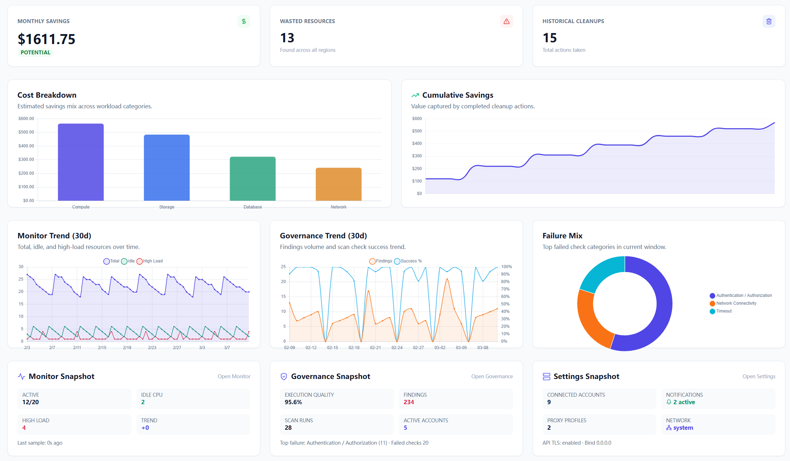

Teams usually do not fail at finding waste. They fail at routing and execution. This guide fixes that exact gap in one practical run.
If you are evaluating cloud governance tools, this page helps you validate real day-to-day usability: account setup, proxy routing, notification ownership, scan result execution, and report export quality.
Treat this as a hands-on benchmark: finish one full cycle, then decide whether your team can run it weekly without extra process overhead.

1) Create at least one working notification channel first
Open Settings → Notifications, click Add Channel, and pick the method that your team already checks every day. Cloud Waste Scanner currently supports:
- Slack Webhook
- Microsoft Teams
- Discord Webhook
- Telegram Bot
- WhatsApp (Meta API)
- Email Report
- Generic Webhook
Use Send Test Notification before saving. A saved channel without a successful test is usually where weekly follow-up breaks.

2) Add account routing with both proxy and owner channels
Go to Settings → Cloud Accounts → Add Account. Fill credentials, then set:
- Account Proxy: Direct, default policy, or a named proxy profile.
- Account Notification Channel: all active channels or a multi-select list of specific channels.
Click Test Connection, then Save. This verification step does not consume scan quota.
3) Run scan from Dashboard and handle findings in Scan Result
- Open Dashboard and click Start Cloud Scan.
- Select one or two accounts in the scan wizard for the first run.
- After scan completion, the app navigates to Scan Result automatically.
On Scan Result, filter by provider, multi-select findings, and split work into:
- Ignore for items already handled outside the app.
- Generate Plan for actions that need explicit execution and traceability.
4) Export practical evidence in both CSV and PDF
Export from Scan Result, Resources, History, or Governance depending on the audience. For most teams:
- CSV goes to engineering and FinOps for bulk tracking.
- PDF goes to review meetings and approval flows.
In PDF export options, enable Add checklist columns so ownership and custom actions can be recorded in the same artifact. This is where daily operations become a reliable review loop instead of ad hoc screenshots.
5) Keep a weekly loop with Monitor and Governance windows
Use the same time window across pages so weekly decisions stay comparable. The practical baseline is to review 7d, 30d, and 90d in both Monitor and Governance.
- Monitor answers resource behavior and account health over time.
- Governance answers whether findings are being processed with stable execution quality.
Next in the series
Continue with Part 9: how to read Dashboard, Scan Result, Governance, and Monitor after a scan. It shows the reading order that helps a new teammate get useful work done without bouncing between pages.
If your team is comparing multiple products, run this exact sequence on each one and compare execution friction, not only dashboard appearance.
Browse all posts: Cloud Waste Scanner Blog.
Run This Workflow Today
Save your first $1,000 before the next billing cycle.